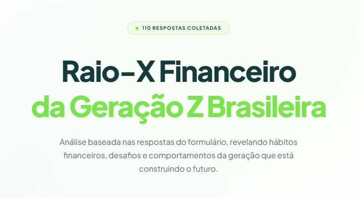
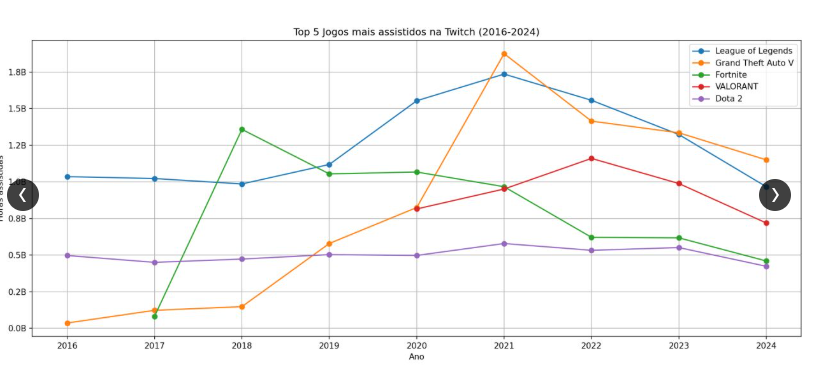
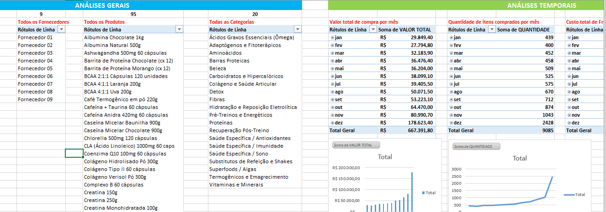
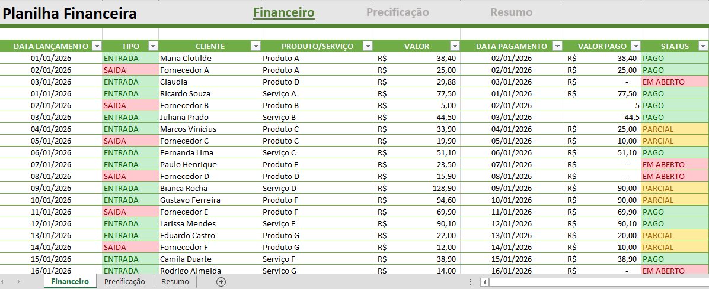

Raio-X Financeiro da Geração Z
Pesquisa própria
Pesquisa com 110 respostas sobre como jovens brasileiros lidam com o dinheiro: controle de gastos, reserva de emergência, crédito e investimentos.
Ver pesquisaSou estudante de Análise e Desenvolvimento de Sistemas na UniCesumar, com conclusão prevista para 2028, e estudo análise de dados usando Excel, SQL e Python, com interesse especial em finanças.
Venho de mais de oito anos de experiência em operações, atendimento e rotinas administrativas, onde aprendi a organizar informação e a enxergar processos. Aqui estão alguns dos projetos que desenvolvi.

Pesquisa própria
Pesquisa com 110 respostas sobre como jovens brasileiros lidam com o dinheiro: controle de gastos, reserva de emergência, crédito e investimentos.
Ver pesquisa
SQL Server, Python, pandas, matplotlib
Análise de mais de 21 mil registros da Twitch entre 2016 e 2024, mostrando o impacto da pandemia na audiência e os jogos que dominaram o período.
Ver no GitHub
Excel
Cerca de 3 mil pedidos de uma loja de suplementos analisados por categoria, fornecedor, período e estado, com tabelas dinâmicas e gráficos.
Baixar planilha
Excel
Planilha de entradas e saídas com status de pagamento automático, precificação com cálculo de margem e resumo em tabelas dinâmicas.
Baixar planilha